What to do > To perform a hands-on Thanos endpoint PoC (Proof of Concept) on an OpenShift DevOps Cluster
1. OpenShift Access:
- Cluster-level access:
Access to view and modify resources within the cluster, typically requiring roles like cluster-admin or admin for broad control, though specific roles could be scoped more granularly.
- Access to
kube-system,monitoring, or any namespace where Thanos components or observability tools are running.
Files and CRC
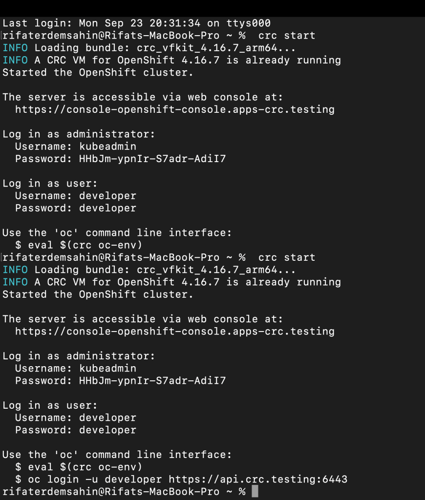
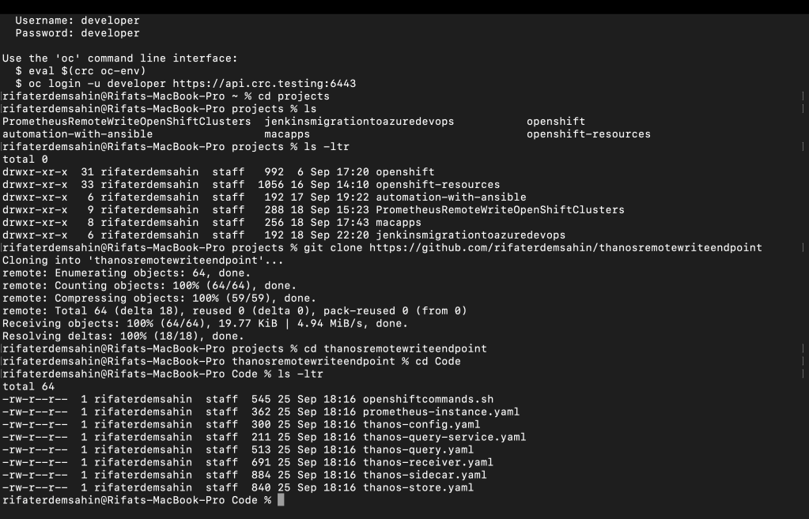
- DevOps Namespace access:
Access to the relevant DevOps namespace/project where Thanos will be deployed and tested. This could include:
-
View roles (
viewrole) to observe configurations and running resources. -
Edit roles (
editrole) to modify and deploy resources for the PoC.
Self signed Certificates
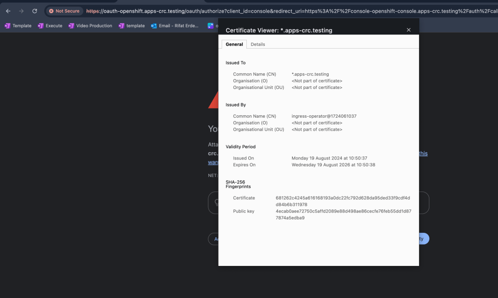
TRUSTED IS MISSING
In the screenshot, the certificate viewer shows that the certificate was issued by "ingress-operator@1724061037." Since there is no information provided about a trusted certificate authority (CA) and the issuer is identified by a local identifier instead of a well-known CA like "Let's Encrypt" or "DigiCert," this strongly indicates that the certificate is self-signed.
Here’s how you can confirm if it's self-signed:
-
Issuer and Subject Matching: If the "Issued By" (the issuer) and the "Issued To" (the subject) fields are identical, this generally indicates a self-signed certificate. In this case, the issuer has a local ingress-operator identifier, which is not associated with a trusted CA.
-
Trusted CA Missing: Trusted certificates are typically signed by publicly trusted certificate authorities (CAs), and their names (e.g., DigiCert, Let's Encrypt) would appear in the "Issued By" field. Since the certificate here does not have a recognizable CA, it's likely self-signed.
-
Unsecure Connection Warning: Your browser is showing a "Not Secure" message in the address bar. This generally happens when the certificate is self-signed or not trusted by the browser.
To further verify:
- Check if your browser trusts the certificate by viewing the certificate chain, which should include trusted CAs. If the chain ends with the server's own certificate, it confirms that the certificate is self-signed.
2. Monitoring & Observability:
Open the code
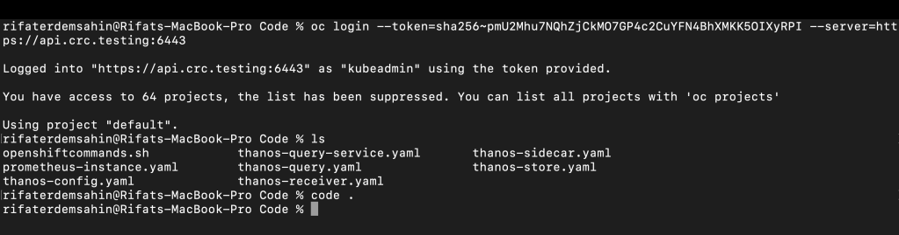
Execute side by side
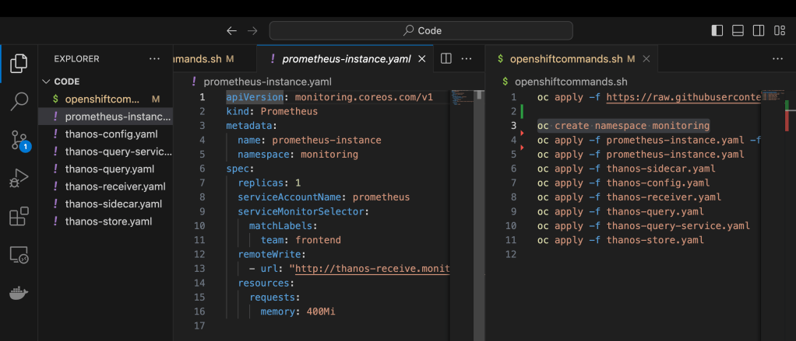
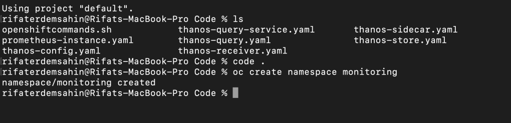
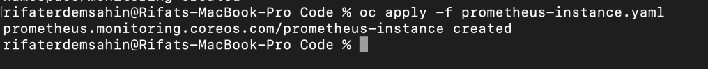
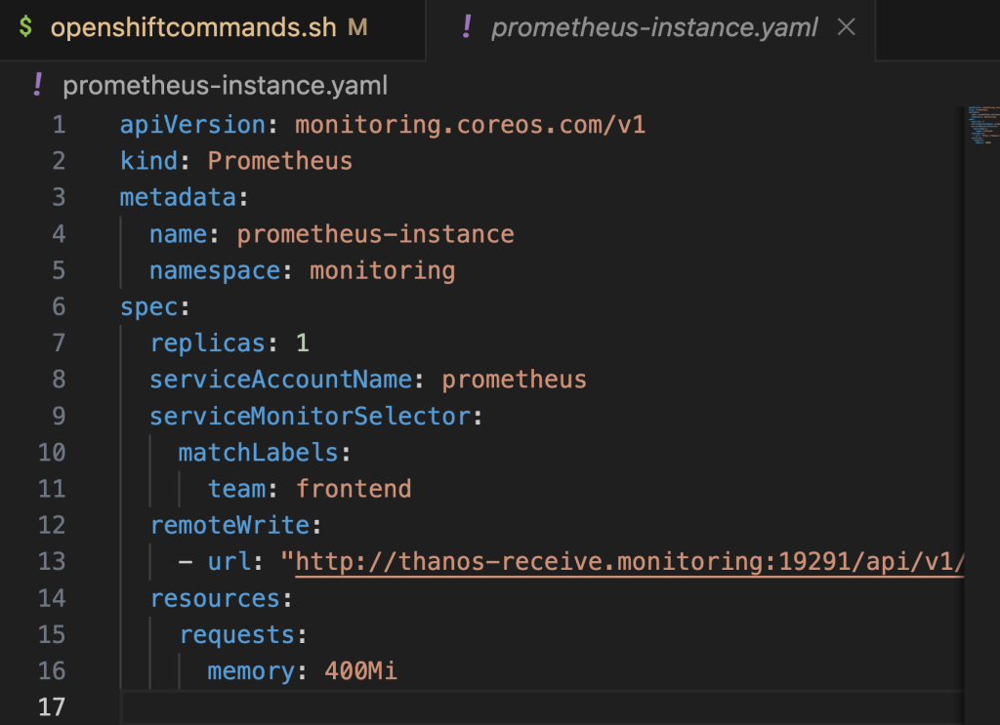
Gets triggered by images
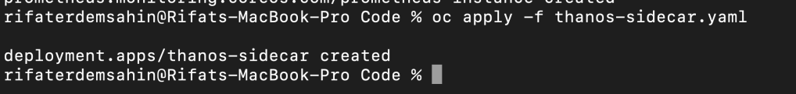
Sidecar image is there
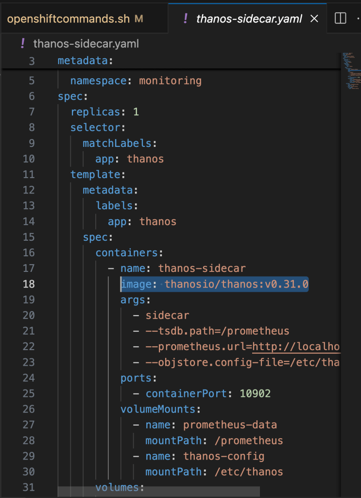
Long term storage
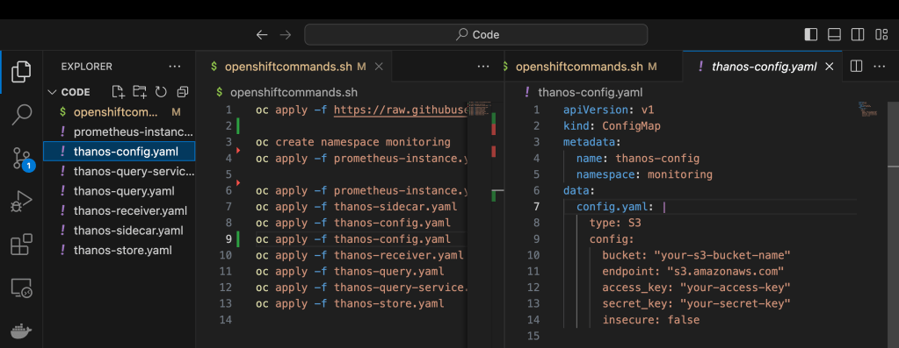
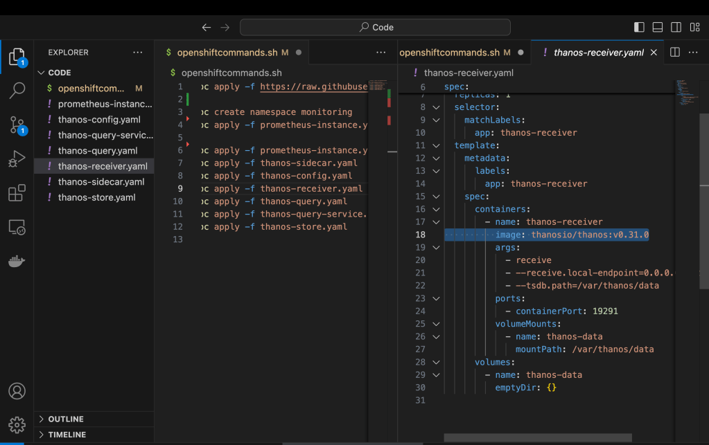
At creating stage
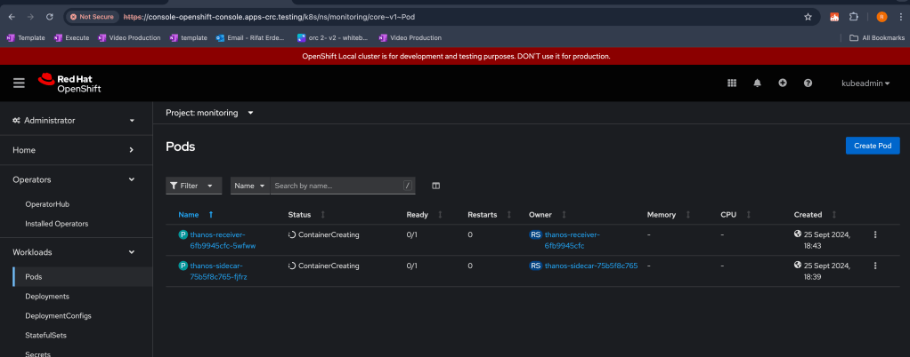
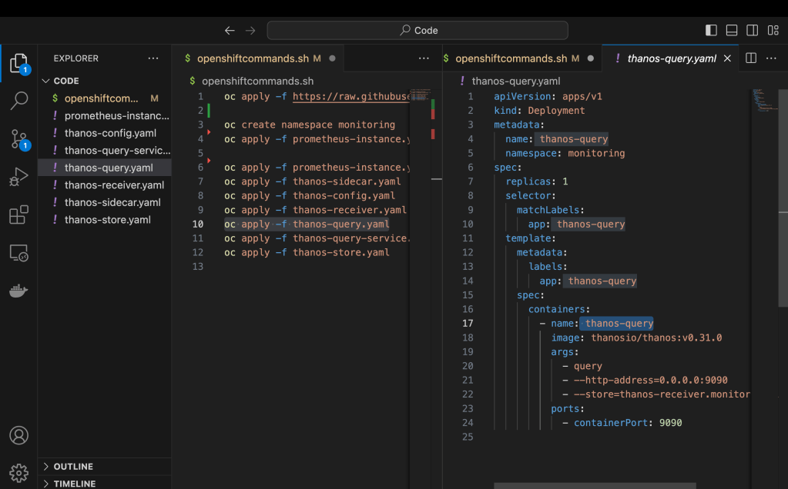
Ask your question to gpt
You're running these two commands to set up a monitoring environment in your OpenShift cluster, specifically to install the Prometheus Operator and create a namespace for monitoring purposes.
-
oc apply -f https://raw.githubusercontent.com/prometheus-operator/prometheus-operator/main/bundle.yaml: -
This command installs the Prometheus Operator by applying the configuration defined in the
**bundle.yaml**file from the provided URL. The Prometheus Operator helps manage Prometheus instances, alerting rules, and service monitors in a Kubernetes or OpenShift cluster. By applying this YAML file, you are deploying the necessary resources (Custom Resource Definitions, services, roles, etc.) required for the Prometheus Operator. -
oc create namespace monitoring: -
This creates a new namespace called
monitoringin your OpenShift cluster. Namespaces help in organizing and isolating resources within a Kubernetes or OpenShift environment. Themonitoringnamespace will likely be used to host the Prometheus instances, Alertmanager, Grafana, and other related resources for monitoring your cluster.
In summary, you're setting up Prometheus for monitoring and creating a namespace to house all the monitoring-related resources.
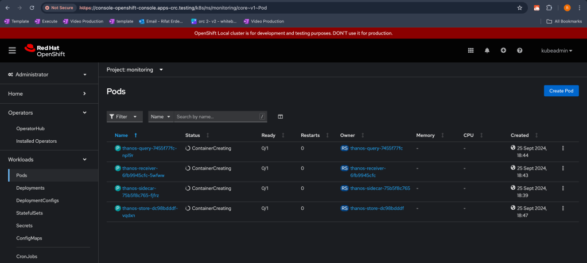
- Prometheus Access:
Access to the Prometheus instance running in the OpenShift cluster. You need to:
-
View and query metrics.
-
Access to AlertManager for testing and configuring alerts as part of the observability PoC.
-
Thanos Access:
Ability to install and configure Thanos components (Sidecar, Store, Query, Compact) in the cluster.
-
Modify configuration files for Prometheus to integrate with Thanos.
-
Access to create and view Thanos querier endpoints and explore Thanos dashboards.
3. Network and Service Access:
- Service Access:
Access to modify Service objects in the cluster for exposing the Thanos Querier endpoint to external systems or developers.
-
Modify or create Ingress/Route configurations for external access to the Thanos endpoint.
-
Network Policies:
Ability to define or edit NetworkPolicies to ensure Thanos components can communicate internally (e.g., between Prometheus and Thanos Sidecar) and externally if necessary.
4. DevOps Tooling Access:
- CI/CD Pipeline Access:
If Thanos integration is part of your CI/CD pipeline, access to the pipeline system (like Jenkins, Tekton, or GitLab CI) may be needed to trigger deployments or test Thanos during PoC phases.
5. Secrets and ConfigMaps:
- Access to create, modify, or view Secrets and ConfigMaps related to the configuration of Prometheus and Thanos.
6. Storage Access (Optional):
- Object Storage Access:
If your Thanos setup involves an Object Store (e.g., AWS S3, Google Cloud Storage, or Ceph), you need appropriate access to configure and verify Thanos interaction with the object store.
7. Logging Access (Optional):
- If logging integration is needed, access to the logging stack (e.g., Elasticsearch, Fluentd) to ensure all relevant metrics or logs from Thanos and Prometheus are captured.
8. RBAC Permissions:
- If you don’t have full cluster-admin privileges, ensure you have specific RBAC permissions granted for the following resources:
Pods
-
Services
-
Deployments/StatefulSets
-
Secrets
-
ConfigMaps
-
Ingress/Routes
-
NetworkPolicies
-
PersistentVolumeClaims (if storage integration is required)
Ensure coordination with your OpenShift admin team or DevOps lead to verify your access and the setup of necessary roles and permissions, especially in shared cluster environments.
ERRORS
The issue you're seeing in your OpenShift console, where the Thanos-related pods are stuck in "ContainerCreating," could be caused by a few common factors. Here's a list of possible causes and how you might troubleshoot them:
-
Insufficient Resources:
-
Check if the nodes have enough CPU and memory resources to schedule the pods.
-
Use
oc get nodesorkubectl describe nodesto check the resource availability.
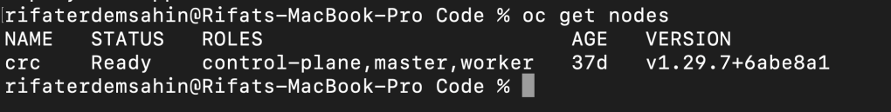
Describe Output
rifaterdemsahin@Rifats-MacBook-Pro Code % kubectl describe nodes
Name: crc
Roles: control-plane,master,worker
Labels: beta.kubernetes.io/arch=arm64
beta.kubernetes.io/os=linux
kubernetes.io/arch=arm64
kubernetes.io/hostname=crc
kubernetes.io/os=linux
node-role.kubernetes.io/control-plane=
node-role.kubernetes.io/master=
node-role.kubernetes.io/worker=
node.openshift.io/os_id=rhcos
topology.hostpath.csi/node=crc
Annotations: csi.volume.kubernetes.io/nodeid: {"kubevirt.io.hostpath-provisioner":"crc"}
k8s.ovn.org/host-cidrs: ["192.168.126.11/24","192.168.127.2/24"]
k8s.ovn.org/l3-gateway-config:
k8s.ovn.org/network-ids: {"default":"0"}
k8s.ovn.org/node-chassis-id: 9d3fff98-01cf-486d-9566-670db031b6a4
k8s.ovn.org/node-gateway-router-lrp-ifaddr: {"ipv4":"100.64.0.2/16"}
k8s.ovn.org/node-id: 2
k8s.ovn.org/node-mgmt-port-mac-address: 5a:82:34:fc:ba:f6
k8s.ovn.org/node-primary-ifaddr: {"ipv4":"192.168.127.2/24"}
k8s.ovn.org/node-subnets: {"default":["10.217.0.0/23"]}
k8s.ovn.org/node-transit-switch-port-ifaddr: {"ipv4":"100.88.0.2/16"}
k8s.ovn.org/remote-zone-migrated: crc
k8s.ovn.org/zone-name: crc
machineconfiguration.openshift.io/controlPlaneTopology: SingleReplica
machineconfiguration.openshift.io/currentConfig: rendered-master-12905364e63cb4650a2c5d16bee61573
machineconfiguration.openshift.io/desiredConfig: rendered-master-12905364e63cb4650a2c5d16bee61573
machineconfiguration.openshift.io/desiredDrain: uncordon-rendered-master-12905364e63cb4650a2c5d16bee61573
machineconfiguration.openshift.io/lastAppliedDrain: uncordon-rendered-master-12905364e63cb4650a2c5d16bee61573
machineconfiguration.openshift.io/lastObservedServerCAAnnotation: false
machineconfiguration.openshift.io/lastSyncedControllerConfigResourceVersion: 641274
machineconfiguration.openshift.io/post-config-action:
machineconfiguration.openshift.io/reason:
machineconfiguration.openshift.io/state: Done
volumes.kubernetes.io/controller-managed-attach-detach: true
CreationTimestamp: Mon, 19 Aug 2024 10:48:50 +0100
Taints: <none>
Unschedulable: false
Lease:
HolderIdentity: crc
AcquireTime: <unset>
RenewTime: Wed, 25 Sep 2024 19:11:56 +0100
Conditions:
Type Status LastHeartbeatTime LastTransitionTime Reason Message
---- ------ ----------------- ------------------ ------ -------
MemoryPressure False Wed, 25 Sep 2024 19:09:06 +0100 Mon, 16 Sep 2024 17:09:11 +0100 KubeletHasSufficientMemory kubelet has sufficient memory available
DiskPressure False Wed, 25 Sep 2024 19:09:06 +0100 Thu, 19 Sep 2024 19:36:16 +0100 KubeletHasNoDiskPressure kubelet has no disk pressure
PIDPressure False Wed, 25 Sep 2024 19:09:06 +0100 Mon, 16 Sep 2024 17:09:11 +0100 KubeletHasSufficientPID kubelet has sufficient PID available
Ready True Wed, 25 Sep 2024 19:09:06 +0100 Mon, 16 Sep 2024 17:09:11 +0100 KubeletReady kubelet is posting ready status
Addresses:
InternalIP: 192.168.126.11
Hostname: crc
Capacity:
cpu: 4
ephemeral-storage: 31914988Ki
hugepages-1Gi: 0
hugepages-2Mi: 0
hugepages-32Mi: 0
hugepages-64Ki: 0
memory: 10678832Ki
pods: 250
Allocatable:
cpu: 3800m
ephemeral-storage: 29045851293
hugepages-1Gi: 0
hugepages-2Mi: 0
hugepages-32Mi: 0
hugepages-64Ki: 0
memory: 10218032Ki
pods: 250
System Info:
Machine ID: ead182196ec249a899ef937305b0bc1b
System UUID: 9eeaa5fb-8b9e-1841-9307-58bc9f5728f2
Boot ID: 815de132-174c-4d7d-89e0-7cf6f8090bef
Kernel Version: 5.14.0-427.30.1.el9_4.aarch64
OS Image: Red Hat Enterprise Linux CoreOS 416.94.202408062045-0
Operating System: linux
Architecture: arm64
Container Runtime Version: cri-o://1.29.7-3.rhaos4.16.git969f759.el9
Kubelet Version: v1.29.7+6abe8a1
Kube-Proxy Version: v1.29.7+6abe8a1
Non-terminated Pods: (77 in total)
Namespace Name CPU Requests CPU Limits Memory Requests Memory Limits Age
--------- ---- ------------ ---------- --------------- ------------- ---
default myazurerunner 0 (0%) 0 (0%) 0 (0%) 0 (0%) 9d
default prometheusremotewriteopenshiftclusters-7fd596c977-9qxmv 0 (0%) 0 (0%) 0 (0%) 0 (0%) 7d3h
hostpath-provisioner csi-hostpathplugin-zhsz6 0 (0%) 0 (0%) 0 (0%) 0 (0%) 6d23h
monitoring thanos-query-7455f77fc-npl9r 0 (0%) 0 (0%) 0 (0%) 0 (0%) 27m
monitoring thanos-receiver-6fb9945cfc-5wfww 0 (0%) 0 (0%) 0 (0%) 0 (0%) 28m
monitoring thanos-sidecar-75b5f8c765-fjfrz 0 (0%) 0 (0%) 0 (0%) 0 (0%) 32m
monitoring thanos-store-dc98bdddf-vqdxn 0 (0%) 0 (0%) 0 (0%) 0 (0%) 24m
openshift-apiserver-operator openshift-apiserver-operator-795668dd99-dg9fr 10m (0%) 0 (0%) 50Mi (0%) 0 (0%) 37d
openshift-apiserver apiserver-5958c9c46b-22j6s 110m (2%) 0 (0%) 250Mi (2%) 0 (0%) 36d
openshift-authentication-operator authentication-operator-6d984cd8cf-jmxps 20m (0%) 0 (0%) 200Mi (2%) 0 (0%) 37d
openshift-authentication oauth-openshift-544fdcc47b-plldj 10m (0%) 0 (0%) 50Mi (0%) 0 (0%) 9d
openshift-cluster-machine-approver machine-approver-689496d4bd-pqgb4 20m (0%) 0 (0%) 70Mi (0%) 0 (0%) 37d
openshift-cluster-samples-operator cluster-samples-operator-c7b6cdf4f-95d92 20m (0%) 0 (0%) 100Mi (1%) 0 (0%) 37d
openshift-cluster-version cluster-version-operator-d7b96d6d4-vfz68 20m (0%) 0 (0%) 50Mi (0%) 0 (0%) 37d
openshift-config-operator openshift-config-operator-65797d5b9b-thpt4 10m (0%) 0 (0%) 50Mi (0%) 0 (0%) 37d
openshift-console-operator console-conversion-webhook-749c84c49-h4g5l 10m (0%) 0 (0%) 100Mi (1%) 0 (0%) 37d
openshift-console-operator console-operator-7f5749c786-4m6pj 10m (0%) 0 (0%) 100Mi (1%) 0 (0%) 37d
openshift-console console-7cd7c7d658-jv7vz 10m (0%) 0 (0%) 100Mi (1%) 0 (0%) 9d
openshift-console downloads-cfdc7cccf-q25h4 10m (0%) 0 (0%) 50Mi (0%) 0 (0%) 37d
openshift-controller-manager-operator openshift-controller-manager-operator-cdf874c48-qt98t 10m (0%) 0 (0%) 50Mi (0%) 0 (0%) 37d
openshift-controller-manager controller-manager-6cf7c459c4-zbzt4 100m (2%) 0 (0%) 100Mi (1%) 0 (0%) 9d
openshift-dns-operator dns-operator-7446f9ff6d-lp2nd 20m (0%) 0 (0%) 69Mi (0%) 0 (0%) 37d
openshift-dns dns-default-2bp84 60m (1%) 0 (0%) 110Mi (1%) 0 (0%) 37d
openshift-dns node-resolver-gxkdg 5m (0%) 0 (0%) 21Mi (0%) 0 (0%) 37d
openshift-etcd-operator etcd-operator-5d6db48946-hjkn6 10m (0%) 0 (0%) 50Mi (0%) 0 (0%) 37d
openshift-etcd etcd-crc 360m (9%) 0 (0%) 910Mi (9%) 0 (0%) 37d
openshift-image-registry cluster-image-registry-operator-6c6fcd7d7-grlp5 10m (0%) 0 (0%) 50Mi (0%) 0 (0%) 37d
openshift-image-registry image-pruner-28787040-dpr48 100m (2%) 0 (0%) 256Mi (2%) 0 (0%) 18h
openshift-image-registry image-registry-679f68486c-hrkzq 100m (2%) 0 (0%) 256Mi (2%) 0 (0%) 9d
openshift-image-registry node-ca-tp5wf 10m (0%) 0 (0%) 10Mi (0%) 0 (0%) 37d
openshift-ingress-canary ingress-canary-6956c 10m (0%) 0 (0%) 20Mi (0%) 0 (0%) 37d
openshift-ingress-operator ingress-operator-854b88598f-zct95 20m (0%) 0 (0%) 96Mi (0%) 0 (0%) 37d
openshift-ingress router-default-656f74f78f-b2jlx 100m (2%) 0 (0%) 256Mi (2%) 0 (0%) 37d
openshift-ingress routes-controller-76c7f5cbc5-jt82s 0 (0%) 0 (0%) 0 (0%) 0 (0%) 9d
openshift-kube-apiserver-operator kube-apiserver-operator-7c4455dbc6-xxjzv 10m (0%) 0 (0%) 50Mi (0%) 0 (0%) 37d
openshift-kube-apiserver kube-apiserver-crc 290m (7%) 0 (0%) 1224Mi (12%) 0 (0%) 36d
openshift-kube-controller-manager-operator kube-controller-manager-operator-65cc5d849f-47qpv 10m (0%) 0 (0%) 50Mi (0%) 0 (0%) 37d
openshift-kube-controller-manager kube-controller-manager-crc 80m (2%) 0 (0%) 500Mi (5%) 0 (0%) 36d
openshift-kube-scheduler-operator openshift-kube-scheduler-operator-6666887f44-nk24t 10m (0%) 0 (0%) 50Mi (0%) 0 (0%) 37d
openshift-kube-scheduler openshift-kube-scheduler-crc 25m (0%) 0 (0%) 150Mi (1%) 0 (0%) 37d
openshift-kube-storage-version-migrator-operator kube-storage-version-migrator-operator-685b56b758-d98p5 10m (0%) 0 (0%) 50Mi (0%) 0 (0%) 37d
openshift-kube-storage-version-migrator migrator-fd78b896b-p642p 10m (0%) 0 (0%) 200Mi (2%) 0 (0%) 37d
openshift-machine-api control-plane-machine-set-operator-6b67769f8c-mcxsm 10m (0%) 0 (0%) 50Mi (0%) 0 (0%) 37d
openshift-machine-api machine-api-operator-6f97c5bf9d-lcgrh 20m (0%) 0 (0%) 70Mi (0%) 0 (0%) 37d
openshift-machine-config-operator kube-rbac-proxy-crio-crc 20m (0%) 0 (0%) 50Mi (0%) 0 (0%) 37d
openshift-machine-config-operator machine-config-controller-7765bc6f7f-j77ls 40m (1%) 0 (0%) 100Mi (1%) 0 (0%) 37d
openshift-machine-config-operator machine-config-daemon-bnrb7 40m (1%) 0 (0%) 100Mi (1%) 0 (0%) 37d
openshift-machine-config-operator machine-config-operator-78bf6d7fbf-7xppp 40m (1%) 0 (0%) 100Mi (1%) 0 (0%) 37d
openshift-machine-config-operator machine-config-server-j95vp 20m (0%) 0 (0%) 50Mi (0%) 0 (0%) 37d
openshift-marketplace certified-operators-wh7mr 10m (0%) 0 (0%) 40Mi (0%) 0 (0%) 2d5h
openshift-marketplace certified-operators-wx8lh 10m (0%) 0 (0%) 40Mi (0%) 0 (0%) 26h
openshift-marketplace community-operators-9vvwc 10m (0%) 0 (0%) 120Mi (1%) 0 (0%) 6d1h
openshift-marketplace community-operators-pvw2n 10m (0%) 0 (0%) 120Mi (1%) 0 (0%) 5d21h
openshift-marketplace marketplace-operator-7486598ff4-gstdp 1m (0%) 0 (0%) 5Mi (0%) 0 (0%) 37d
openshift-marketplace redhat-marketplace-vgwkj 10m (0%) 0 (0%) 20Mi (0%) 0 (0%) 3d4h
openshift-marketplace redhat-marketplace-xxw9m 10m (0%) 0 (0%) 20Mi (0%) 0 (0%) 5d17h
openshift-marketplace redhat-operators-psqbg 10m (0%) 0 (0%) 30Mi (0%) 0 (0%) 6d21h
openshift-marketplace redhat-operators-t4sh6 10m (0%) 0 (0%) 30Mi (0%) 0 (0%) 6d20h
openshift-multus multus-additional-cni-plugins-87626 10m (0%) 0 (0%) 10Mi (0%) 0 (0%) 37d
openshift-multus multus-admission-controller-d4d5b96df-6bjhd 20m (0%) 0 (0%) 70Mi (0%) 0 (0%) 36d
openshift-multus multus-mwk5t 10m (0%) 0 (0%) 65Mi (0%) 0 (0%) 37d
openshift-multus network-metrics-daemon-jvf7c 20m (0%) 0 (0%) 120Mi (1%) 0 (0%) 37d
openshift-network-diagnostics network-check-source-7554877989-2wl7d 10m (0%) 0 (0%) 40Mi (0%) 0 (0%) 37d
openshift-network-diagnostics network-check-target-hrhkh 10m (0%) 0 (0%) 15Mi (0%) 0 (0%) 37d
openshift-network-node-identity network-node-identity-fcpr9 20m (0%) 0 (0%) 100Mi (1%) 0 (0%) 37d
openshift-network-operator iptables-alerter-wwtzk 10m (0%) 10m (0%) 65Mi (0%) 0 (0%) 37d
openshift-network-operator network-operator-57b85c5977-8ztf5 10m (0%) 0 (0%) 50Mi (0%) 0 (0%) 37d
openshift-oauth-apiserver apiserver-745466fc76-2sj8t 150m (3%) 0 (0%) 200Mi (2%) 0 (0%) 37d
openshift-operator-lifecycle-manager catalog-operator-84c94589df-flsxx 10m (0%) 0 (0%) 80Mi (0%) 0 (0%) 37d
openshift-operator-lifecycle-manager olm-operator-5447684-c5fgx 10m (0%) 0 (0%) 160Mi (1%) 0 (0%) 37d
openshift-operator-lifecycle-manager package-server-manager-585f5f44f8-65hjj 20m (0%) 0 (0%) 30Mi (0%) 0 (0%) 37d
openshift-operator-lifecycle-manager packageserver-66b48c6844-v6sqd 10m (0%) 0 (0%) 50Mi (0%) 0 (0%) 37d
openshift-ovn-kubernetes ovnkube-control-plane-55469958c8-nv589 20m (0%) 0 (0%) 320Mi (3%) 0 (0%) 37d
openshift-ovn-kubernetes ovnkube-node-rbgz9 80m (2%) 0 (0%) 1630Mi (16%) 0 (0%) 37d
openshift-route-controller-manager route-controller-manager-848c59dc4-tpr5j 100m (2%) 0 (0%) 100Mi (1%) 0 (0%) 9d
openshift-service-ca-operator service-ca-operator-84c7f85459-c6s86 10m (0%) 0 (0%) 80Mi (0%) 0 (0%) 37d
openshift-service-ca service-ca-6fd56f67bb-bhzhd 10m (0%) 0 (0%) 120Mi (1%) 0 (0%) 37d
Allocated resources:
(Total limits may be over 100 percent, i.e., overcommitted.)
Resource Requests Limits
-------- -------- ------
cpu 2431m (63%) 10m (0%)
memory 9948Mi (99%) 0 (0%)
ephemeral-storage 0 (0%) 0 (0%)
hugepages-1Gi 0 (0%) 0 (0%)
hugepages-2Mi 0 (0%) 0 (0%)
hugepages-32Mi 0 (0%) 0 (0%)
hugepages-64Ki 0 (0%) 0 (0%)
Events:
Type Reason Age From Message
---- ------ ---- ---- -------
Normal RegisteredNode 60m node-controller Node crc event: Registered Node crc in Controller
rifaterdemsahin@Rifats-MacBook-Pro Code %
GPT Report
This output comes from the kubectl describe nodes command, which provides detailed information about a Kubernetes node. Here’s a breakdown of the key elements from this output:
Node Overview:
-
Name: The node is named
crc, indicating it's a part of the OpenShift CRC (CodeReady Containers) environment. -
Roles: The node has multiple roles:
control-plane,master, andworker, meaning it's responsible for managing the Kubernetes control plane as well as running application workloads. -
Labels: Labels such as
kubernetes.io/arch=arm64andkubernetes.io/os=linuxindicate that the node is running on the ARM64 architecture with a Linux operating system. Thenode-role.kubernetes.io/workerandnode-role.kubernetes.io/masterlabels show the node is assigned both master and worker roles. -
Annotations: These provide additional metadata about the node’s configuration, such as network and storage-related settings. For example:
-
k8s.ovn.org/host-cidrslists the node’s CIDR ranges. -
k8s.ovn.org/l3-gateway-configprovides details about the gateway configuration. -
machineconfiguration.openshift.io/currentConfigand similar entries pertain to the OpenShift machine configuration and its status. -
Conditions: The health status of the node is monitored through various conditions:
-
MemoryPressure,DiskPressure, andPIDPressureare allFalse, meaning the node has sufficient memory, disk space, and process identifiers. -
ReadyisTrue, indicating the node is ready and functioning.
Capacity and Allocatable Resources:
-
Capacity: The total resources available on the node:
-
cpu: 4indicates 4 CPU cores. -
memory: 10.6 GiBof RAM is available. -
pods: 250shows the node can host up to 250 pods. -
Allocatable: This section shows the resources available to be used by workloads, slightly reduced due to system reservations:
-
cpu: 3800mmeans 3.8 CPU cores are allocatable (after reserving some for system processes). -
memory: 10.2 GiBof RAM is allocatable.
System Info:
-
Machine ID, UUID, Boot ID: These uniquely identify the system and its current boot cycle.
-
Kernel Version: The Linux kernel version is
5.14.0. -
OS Image: The node runs on Red Hat Enterprise Linux CoreOS.
-
Container Runtime Version:
cri-o://1.29.7is used as the container runtime. -
Kubelet and Kube-Proxy Versions: Both are running Kubernetes version
1.29.7.
Pods Running on the Node:
-
Non-terminated Pods: This section lists the pods running on the node, including their resource requests and limits. Some examples are:
-
The
myazurerunnerpod in thedefaultnamespace. -
Several OpenShift system pods such as
openshift-apiserver,kube-controller-manager, andimage-registry. -
Pods in the
monitoringnamespace, such asthanos-queryandthanos-receiver, for monitoring and logging.
Resource Allocation:
-
The Allocated Resources section summarizes the total requests and limits set by the pods on the node:
-
cpu: 2431mmeans about 63% of the node’s CPU is requested. -
memory: 9948Mimeans about 99% of the memory is requested.
Events:
- This shows any recent events related to the node, such as the
Normal RegisteredNodeevent indicating the node was successfully registered with the cluster controller.
In summary, this node is part of a CRC (CodeReady Containers) OpenShift environment, serving both control-plane and worker roles, and is in a healthy state with sufficient resources to run its assigned pods.
-
Pending or Unavailable Persistent Volumes:
-
If the pods require persistent storage (for example, Thanos Store might need a volume for storage), the PVC (Persistent Volume Claim) might not be bound.
-
Check if the PVCs are in a "Pending" state using
kubectl get pvc.
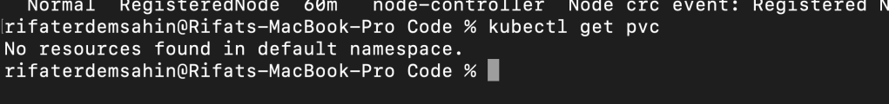
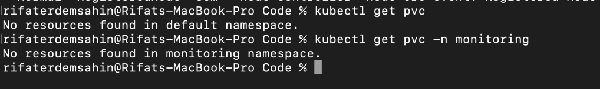
-
Image Pull Issues:
-
The image might not be available or there could be network issues that prevent the pod from pulling the container image.
-
You can check the pod events using
kubectl describe pod <pod-name>and look for any image pull errors.
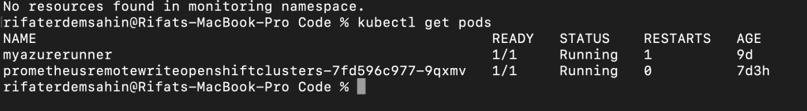
-
Network Issues:
-
If there are networking problems between the nodes or the pod's DNS, the containers might not be able to communicate properly.
-
Try checking the networking setup or any network policies that might be preventing the pod from initializing.
-
Pod Security Context or Privileges:
-
Some security constraints might prevent the container from running.
-
Check the security policies or try running the pod with different security context settings.
-
CrashLoopBackOff or Other Pod Errors:
-
If the pod tried to start but failed, it might enter a CrashLoopBackOff state, even though it’s shown as "ContainerCreating."
-
Use
kubectl logs <pod-name>to check the logs of the pod and investigate if it's failing to start properly.
You can start by describing one of the pods using:
kubectl describe pod
This will give you detailed information about what could be causing the container to stay in the creating state, such as events, resource requests, or image pull issues.
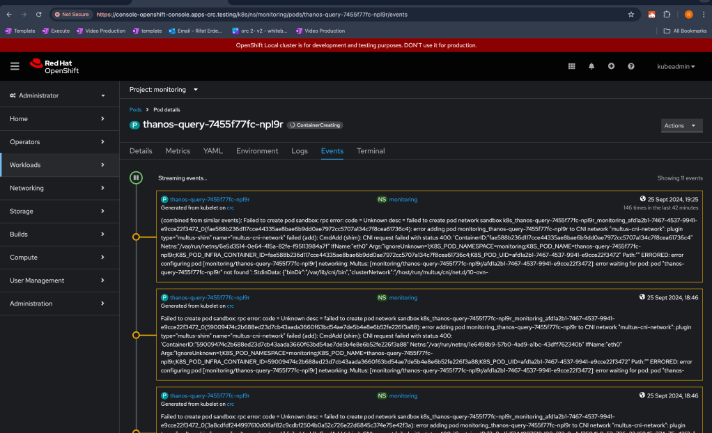
It looks like you're facing issues with creating a pod in Kubernetes due to a failure in the Multus CNI (Container Network Interface) configuration. Here’s how you can troubleshoot and potentially resolve this issue:
Steps to resolve:
-
Check Multus CNI Configuration:
-
The error suggests a problem with the Multus CNI plugin (
multus-shimandmultus-cni-network). Verify the configuration files of the Multus CNI plugin to ensure that the correct network configuration is set. -
The path
/host/run/multus/cni/net.d/10-ovn-kubernetes.confis indicated in the error. Ensure that this file is correctly configured and exists on all nodes. -
Validate CNI Binaries:
-
Ensure the required CNI binaries are present on the nodes. Run the following command on each node:
**ls /var/lib/cni/bin** -
If any binaries are missing, you might need to reinstall the Multus CNI plugin.
-
Review Network Namespace:
-
The error references the network namespace (
Netns), which could indicate an issue with the network interface or the namespace itself. -
Check if the network namespace exists and is properly set up:
ip netns list -
If the namespace does not exist, there may be issues with the container runtime. Restarting the container runtime or kubelet may help.
-
Check Pod Logs:
-
View the logs for the Thanos pod to gather more details about the networking failure:
kubectl logs thanos-query-7455f77fc-npl9r -n monitoring -
Multus CNI Plugin Logs:
-
Check the Multus logs for any specific error messages. The logs should be located in
/var/log/multus.logor a similar directory depending on your setup. -
Restart kubelet and container runtime:
-
Sometimes, restarting the kubelet and the container runtime on the affected node can fix issues with pod creation:
systemctl restart kubelet systemctl restart containerd/docker -
Verify Node Networking:
-
Make sure that the nodes can communicate with each other and that the networking between the nodes is not restricted by firewalls or other network policies.
-
Use
pingortracerouteto check connectivity. -
Check for Resource Limits:
-
Sometimes, issues can arise due to resource constraints on the node. Check if the node is running out of CPU, memory, or network resources.
-
Update Multus CNI:
-
If the Multus CNI plugin is outdated or misconfigured, consider updating or reconfiguring it:
kubectl apply -f https://raw.githubusercontent.com/intel/multus-cni/master/images/multus-daemonset.yml -
Recreate the Pod:
If the configuration issues are resolved but the pod is still stuck, delete and recreate the pod:
kubectl delete pod thanos-query-7455f77fc-npl9r -n monitoring kubectl apply -f <your-thanos-query-deployment-file>.yaml
Further Debugging:
- If the problem persists, you can enable more verbose logging for the CNI plugin or kubelet to gather additional insights.
Let me know how it goes or if you need further assistance with any of the steps!
In OpenShift, accessing nodes directly is not recommended unless you have specific administrative access. Instead, OpenShift provides ways to interact with nodes and containers via oc commands.
Here is how you can check for the CNI binaries on the nodes in OpenShift:
Steps to Verify CNI Binaries on OpenShift Nodes:
- Get a List of Nodes: Use the
occommand to get the list of nodes in the OpenShift cluster.
oc get nodes
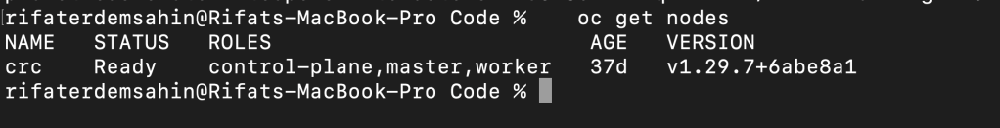
- SSH into the Node: If you have administrative access and are allowed to SSH into nodes, use the node’s IP or hostname to log in:
ssh [username]@[node_ip]
- Run the Command: Once you’re logged into the node, check for the CNI binaries:
ls /var/lib/cni/bin
- Alternatively - Use
oc debugto Access Nodes (Without SSH): OpenShift provides theoc debugcommand, which allows you to interact with nodes without directly SSH’ing into them. Here’s how you can do that:
oc debug node/[node_name]
This will drop you into a debug pod on the node. Once there, run the following command to check the CNI binaries:
chroot /host ls /var/lib/cni/bin
This command uses chroot to run the ls command in the node's file system.
- Exit the Debug Pod: Once you’ve verified the presence of the binaries, you can exit the debug pod.
exit
Conclusion
By using the oc debug command, you can access nodes in OpenShift without SSH, allowing you to check for CNI binaries in a safe and cluster-compliant way. If any binaries are missing, you may need to troubleshoot or reinstall the relevant CNI plugin.
The issue you're facing stems from the fact that crc is not resolving to a valid hostname or IP address. This typically happens when the hostname isn't mapped in your /etc/hosts file or DNS isn't configured properly. Since you're using CRC (CodeReady Containers), here's how you can resolve the issue and successfully SSH into the node:
Steps:
- Get the IP Address of the CRC Node:
First, get the IP address of thecrcnode. If CRC is running on your local machine, use the following command to get the IP address:
crc ip
This will return the IP address of the CRC VM running on your machine.
- SSH into the CRC Node:
Once you have the IP address, you can SSH into the CRC node using thekubeadminuser. Replacex.x.x.xwith the IP address obtained in the previous step.
ssh kubeadmin@x.x.x.x
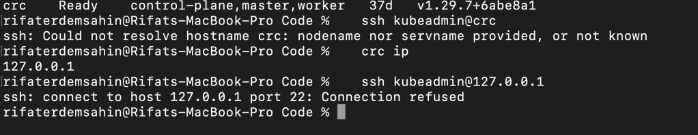
If you get a password prompt, the default password for kubeadmin in CRC can be retrieved using:
cat ~/.crc/machines/crc/kubeadmin-password
Use the password provided when prompted.
- Run the Command:
After logging into the node, run the following command to check for the presence of the CNI binaries:
ls /var/lib/cni/bin
Alternative - Use oc debug if SSH Doesn't Work:
If SSH is not feasible or fails for any reason, you can use the oc debug method to access the node directly without using SSH:
- Run the following command to enter the debug environment for your node:
oc debug node/crc
- Once inside, run:
chroot /host ls /var/lib/cni/bin
- After checking, exit the debug environment:
exit
This should allow you to inspect the required CNI binaries on your OpenShift CRC node.
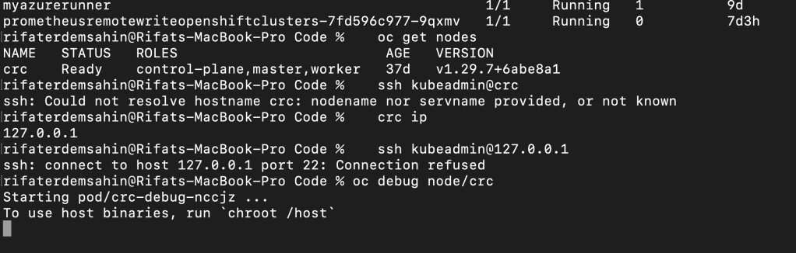
It appears that the directory /var/lib/cni/bin does not exist in your current setup, or at least it is not visible in the location you are checking. This might be due to one of the following reasons:
-
CNI plugins might not be installed: The CNI binaries might not have been set up properly in your environment. You can install them manually if required.
-
Different directory structure: In some OpenShift or CRC setups, the directory for CNI binaries might be located elsewhere.
To Troubleshoot Further:
- Check for CNI directory in alternate locations:
Try checking other common locations for CNI binaries:
ls /opt/cni/bin
Or:
ls /usr/libexec/cni
These are alternate paths where CNI binaries might be stored.
- Verify CNI plugin installation:
Ensure that the CNI plugins are correctly installed by searching for known CNI binaries (bridge,host-local,loopback, etc.). Use the following command to search for these binaries across the system:
find / -name bridge -o -name host-local -o -name loopback
- Check OpenShift Network Configuration:
If you are using OpenShift, you may also want to check if the network configuration is set up properly. You can check theNetworkandClusterNetworkresources in OpenShift:
oc get network
oc get clusternetwork
- Install CNI Plugins (If Missing):
If you find that the CNI plugins are not installed, you can install them by downloading the relevant binaries. For CRC, these might have been skipped during the initial setup. You can find pre-compiled CNI plugins here: CNI Plugins Release Page. Download the required version, extract it, and place the binaries in the appropriate directory (e.g.,/opt/cni/binor/usr/libexec/cni).
Let me know if the directory or files are found in the alternate locations, or if you need help with installing the CNI plugins.
To install a Container Network Interface (CNI) plugin on CRC (CodeReady Containers), you'll typically need to follow the process depending on the CNI you're using (e.g., Calico, Flannel, Weave). Here's a general guide:
Prerequisites:
- Ensure CRC is Running:
Make sure your CRC cluster is up and running. You can verify this with:
crc status
- Access the CRC Cluster:
Log into your CRC cluster usingoc(OpenShift CLI):
crc oc-env
eval $(crc oc-env)
oc login -u developer -p developer https://api.crc.testing:6443
Steps to Install a CNI Plugin:
- Download CNI Plugin YAML:
Get the appropriate YAML file for the CNI plugin you wish to install, such as Calico, Flannel, or Weave. For example, to install Calico, download the Calico manifest:
curl https://docs.projectcalico.org/manifests/calico.yaml -O
- Apply the Manifest to Your Cluster:
Once you have the manifest, apply it to your CRC cluster usingoc applyorkubectl apply:
oc apply -f calico.yaml
- Verify the Installation:
After applying the manifest, verify the pods related to the CNI are running:
oc get pods -n kube-system
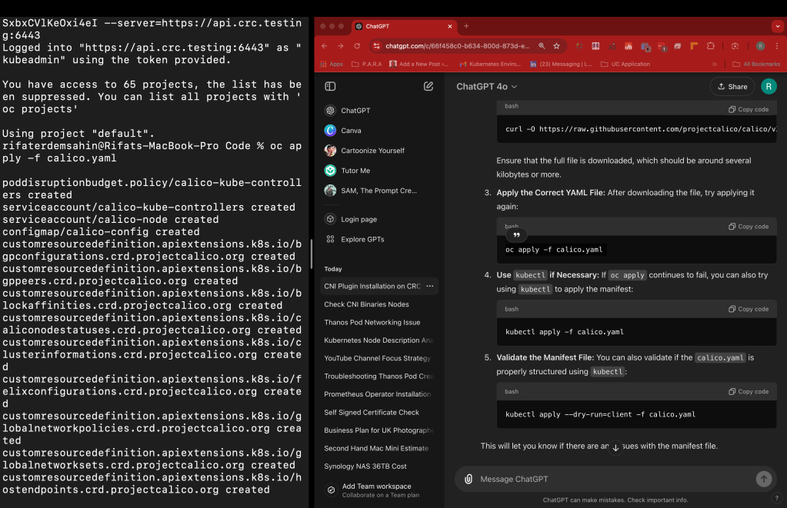
Check if all Calico (or other CNI) pods are in a running state.
- Test the Network:
You can deploy a test workload to verify that the networking is working correctly after CNI installation. For example, create a simple pod and check its networking configuration.
It seems that the Calico pods are facing issues, particularly the calico-node pod, which is stuck in Init:Error state. This is usually caused by problems in initializing network components or dependencies. Let's troubleshoot step by step:
1. Check the Logs for the Failing Pod:
To understand the root cause, check the logs of the calico-node pod:
oc logs calico-node-q9mrz -n kube-system
This should give you insight into why the initialization is failing.
2. Check Node Status:
Ensure the node on which the Calico pod is running is in a healthy state:
oc get nodes
Verify that the nodes are ready and not in any tainted or degraded state.
3. Inspect Calico Configuration:
Sometimes, Calico has trouble with IP allocation or BGP settings in specific environments. You can inspect the Calico configuration by reviewing the ConfigMap used by Calico:
oc get configmap -n kube-system calico-config -o yaml
Look for anything that stands out, such as incorrect IP pools or interface settings.
4. Check for Resource Conflicts:
If the node or cluster doesn't have enough resources, Calico pods may fail to initialize properly. Check the available resources:
oc describe node
Verify if there are resource shortages like CPU, memory, or disk space.
5. Network Plugin Conflict:
CRC might have come with its default network plugin. If there is a conflict between the pre-installed CNI plugin and Calico, you might need to uninstall the default network plugin or configure Calico to work alongside it.
Check for any other CNI plugins installed:
oc get ds -n kube-system
If any other CNI daemonsets (like Flannel) are present, they may conflict with Calico.
6. Review Cluster DNS and Networking:
Networking issues like DNS or incorrect routes can also cause Calico to fail. Ensure that your DNS and networking setup are functioning properly:
oc get svc -n kube-system
oc get endpoints -n kube-system
Once you get the logs and more details from the steps above, we can dig deeper into resolving the issue. Let me know what the logs reveal!
Additional Notes:
-
Ensure that you remove any existing default network configuration if applicable to avoid conflicts.
-
CRC comes with a pre-configured networking setup, so this installation is typically for scenarios where a specific network configuration is required.
The error message indicates that the calico-node container is stuck in the PodInitializing phase, which could be caused by one of the **initContainers** not completing successfully.
Let's inspect the status of the init containers in the calico-node pod.
1. Check Pod Details:
Get the full details of the calico-node pod to see the status of all the containers, including the initContainers:
oc describe pod calico-node-q9mrz -n kube-system
This should show the status of each init container (upgrade-ipam, install-cni, mount-bpffs) and reveal which one is failing.
2. Check Init Container Logs:
Each of the init containers (upgrade-ipam, install-cni, mount-bpffs) may have logs that indicate why they are failing. You can check their logs one by one:
oc logs calico-node-q9mrz -n kube-system -c install-cni
oc logs calico-node-q9mrz -n kube-system -c mount-bpffs
oc logs calico-node-q9mrz -n kube-system -c upgrade-ipam
This will give you more detailed information on what might be blocking the initialization.
3. Possible Causes:
-
Permissions: The init containers might require elevated permissions (like access to system-level network components) that are missing.
-
Node Conditions: If the node has taints or lacks sufficient resources (e.g., CPU, memory), it could prevent the pod from initializing.
-
Existing Network Configuration: If another CNI plugin is still active or conflicting, it could prevent Calico from properly installing.
After running these commands, let me know what the logs show for the failing init containers, and we can proceed from there!
The error message indicates that the install-cni container is failing because it cannot write to the necessary directories (/host/opt/cni/bin and /host/secondary-bin-dir). These directories are critical for installing the CNI binaries.
This could happen due to permissions issues or missing volume mounts on the host.
Steps to Fix:
- Ensure Proper Mounts:
The CNI installation process requires access to the/opt/cni/bindirectory on the host. If this directory is not properly mounted in the pod or if the permissions are wrong, the installer won't be able to proceed. Check the pod specification to ensure the volumes are correctly mounted by running:
oc describe pod calico-node-q9mrz -n kube-system
Look for the volume mounts for /host/opt/cni/bin and /host/secondary-bin-dir. Ensure these paths are accessible.
- Check Node Permissions:
Ensure that the node where this pod is running has the required directory structure and permissions. SSH into the node (if possible) and check if the directories exist and have write permissions:
ls -ld /opt/cni/bin
If the directories do not exist, create them and set appropriate permissions:
sudo mkdir -p /opt/cni/bin
sudo chmod 755 /opt/cni/bin
- Try Re-running the Installer:
After making sure the directories are writeable, delete thecalico-nodepod to trigger a restart:
oc delete pod calico-node-q9mrz -n kube-system
This will recreate the pod and the installer will attempt to run again.
- Check for Other CNI Conflicts:
If there is another CNI plugin already installed, it could be interfering with Calico's installation. You can check for other network-related pods or daemonsets:
oc get ds -n kube-system
If there are other CNI daemonsets (like Flannel), consider disabling them to avoid conflicts.
Let me know how these steps go, and if the issue persists, we can dig deeper!
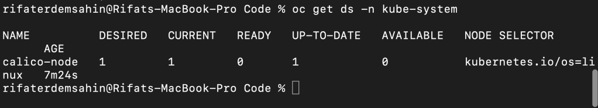
In an OpenShift CRC (CodeReady Containers) environment, issues with Calico—a networking solution for Kubernetes clusters—can arise due to several reasons. Here are some common causes and contributing factors:
1. Resource Constraints
- CRC is resource-limited: CRC is designed for local development and testing and often runs on laptops or desktops with limited resources. Calico requires sufficient CPU, memory, and disk resources for networking operations. If the machine running CRC is resource-constrained, it may affect Calico's functionality, causing network instability or performance degradation.
2. Misconfiguration
-
Network policy misconfigurations: Calico enforces network policies. If these policies are improperly configured, they can inadvertently block traffic between pods or external resources, causing connectivity issues.
-
Incorrect CIDR ranges: If the IP ranges used by Calico do not match the CIDR ranges assigned in the OpenShift CRC network configuration, networking issues can arise.
3. Incompatibility with OpenShift
- Calico and OpenShift integration: OpenShift CRC might have compatibility issues with Calico depending on how they are integrated. OpenShift has its default SDN (Software Defined Networking) provider, and conflicts can occur if Calico is not properly configured to work with OpenShift’s networking stack.
4. Container Runtime Issues
- Container runtime problems: Calico depends on Kubernetes' container runtime to manage network interfaces. If there are issues with the container runtime (like
cri-oorcontainerd), it can affect Calico’s operation, leading to pod networking failures.
5. IP Address Exhaustion
- Limited IP space: CRC typically runs with limited IP address ranges due to its local, small-scale setup. If many pods are deployed and the IP range is exhausted, Calico might fail to assign new IP addresses to pods, causing network outages.
6. Host Network Configuration
- Network conflicts on host machine: The host system running CRC may have conflicting network configurations (e.g., VPNs, firewalls, or local network interface settings), which can interfere with Calico’s networking stack. These conflicts might cause packet drops, latency, or broken connectivity between pods.
7. Version Mismatch
- Version compatibility: Issues may arise if there is a version mismatch between Calico and the OpenShift CRC version being used. Changes in the APIs or networking functionality between different versions of OpenShift or Kubernetes could lead to incompatibilities with the installed version of Calico.
8. Insufficient Permissions
- RBAC and security policies: If Calico does not have the necessary permissions to configure network resources (due to Role-Based Access Control or security restrictions in OpenShift), it might not function correctly. This could manifest as failed networking for pods.
9. Calico CNI Plugin Issues
- CNI plugin errors: Calico functions as a CNI (Container Network Interface) plugin for Kubernetes. Issues with the CNI plugin itself—such as bugs, improper installation, or configuration errors—can disrupt pod networking in the CRC environment.
To troubleshoot these issues, you can:
-
Check pod logs for Calico-related components (e.g.,
calico-node,calico-kube-controllers). -
Validate network policies and ensure they’re correctly applied.
-
Monitor the CRC environment’s resource usage to ensure Calico has enough resources.
-
Verify that CIDR ranges are configured correctly and there is no IP address exhaustion.
Would you like any specific guidance on resolving these issues in your setup?
Rerun >>> promethesus yaml at the start
The content from your file appears to show Kubernetes custom resource definitions (CRDs) and related resources for the Prometheus operator. Specifically, it lists unchanged resources, including CRDs, role bindings, and deployments. Here's a breakdown:
-
CustomResourceDefinitions (CRDs):
-
podmonitors.monitoring.coreos.com: Used to monitor individual pods.
-
probes.monitoring.coreos.com: Custom probes for monitoring specific endpoints.
-
prometheusrules.monitoring.coreos.com: Define alerting and recording rules for Prometheus.
-
servicemonitors.monitoring.coreos.com: Service discovery for monitoring services.
-
ClusterRole and RoleBinding:
-
prometheus-operator: Permissions and bindings related to Prometheus Operator functionality, allowing it to perform actions on Kubernetes resources.
-
Deployment and Service:
-
prometheus-operator: Manages the Prometheus instances and related resources within the cluster.
These resources are marked as unchanged, suggesting that a kubectl apply command or similar action was run, and the existing configurations were already up-to-date, so no modifications were required.
Would you like further analysis on the Prometheus operator setup or Kubernetes monitoring practices?
In an OpenShift CRC (CodeReady Containers) environment, issues with Calico—a networking solution for Kubernetes clusters—can arise due to several reasons. Here are some common causes and contributing factors:
1. Resource Constraints
- CRC is resource-limited: CRC is designed for local development and testing and often runs on laptops or desktops with limited resources. Calico requires sufficient CPU, memory, and disk resources for networking operations. If the machine running CRC is resource-constrained, it may affect Calico's functionality, causing network instability or performance degradation.
2. Misconfiguration
-
Network policy misconfigurations: Calico enforces network policies. If these policies are improperly configured, they can inadvertently block traffic between pods or external resources, causing connectivity issues.
-
Incorrect CIDR ranges: If the IP ranges used by Calico do not match the CIDR ranges assigned in the OpenShift CRC network configuration, networking issues can arise.
3. Incompatibility with OpenShift
- Calico and OpenShift integration: OpenShift CRC might have compatibility issues with Calico depending on how they are integrated. OpenShift has its default SDN (Software Defined Networking) provider, and conflicts can occur if Calico is not properly configured to work with OpenShift’s networking stack.
4. Container Runtime Issues
- Container runtime problems: Calico depends on Kubernetes' container runtime to manage network interfaces. If there are issues with the container runtime (like
cri-oorcontainerd), it can affect Calico’s operation, leading to pod networking failures.
5. IP Address Exhaustion
- Limited IP space: CRC typically runs with limited IP address ranges due to its local, small-scale setup. If many pods are deployed and the IP range is exhausted, Calico might fail to assign new IP addresses to pods, causing network outages.
6. Host Network Configuration
- Network conflicts on host machine: The host system running CRC may have conflicting network configurations (e.g., VPNs, firewalls, or local network interface settings), which can interfere with Calico’s networking stack. These conflicts might cause packet drops, latency, or broken connectivity between pods.
7. Version Mismatch
- Version compatibility: Issues may arise if there is a version mismatch between Calico and the OpenShift CRC version being used. Changes in the APIs or networking functionality between different versions of OpenShift or Kubernetes could lead to incompatibilities with the installed version of Calico.
8. Insufficient Permissions
- RBAC and security policies: If Calico does not have the necessary permissions to configure network resources (due to Role-Based Access Control or security restrictions in OpenShift), it might not function correctly. This could manifest as failed networking for pods.
9. Calico CNI Plugin Issues
- CNI plugin errors: Calico functions as a CNI (Container Network Interface) plugin for Kubernetes. Issues with the CNI plugin itself—such as bugs, improper installation, or configuration errors—can disrupt pod networking in the CRC environment.
To troubleshoot these issues, you can:
-
Check pod logs for Calico-related components (e.g.,
calico-node,calico-kube-controllers). -
Validate network policies and ensure they’re correctly applied.
-
Monitor the CRC environment’s resource usage to ensure Calico has enough resources.
-
Verify that CIDR ranges are configured correctly and there is no IP address exhaustion.
Would you like any specific guidance on resolving these issues in your setup?
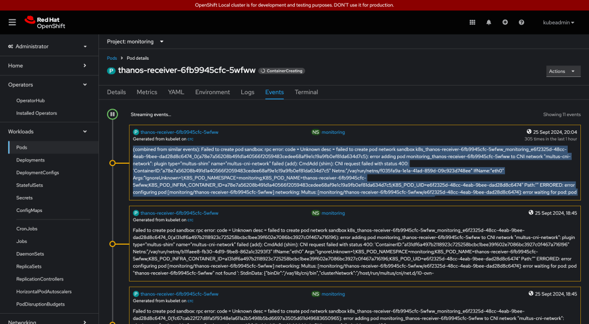
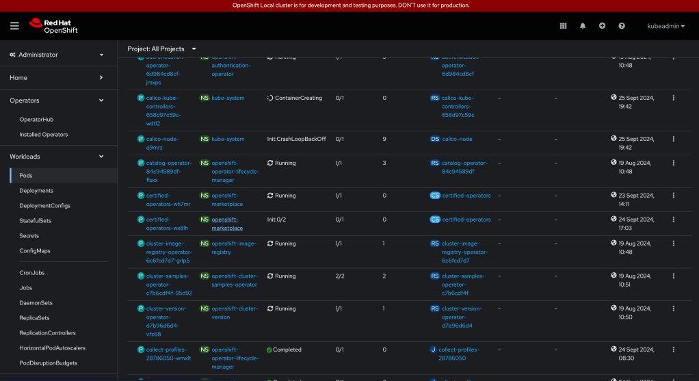
Imported from rifaterdemsahin.com · 2026